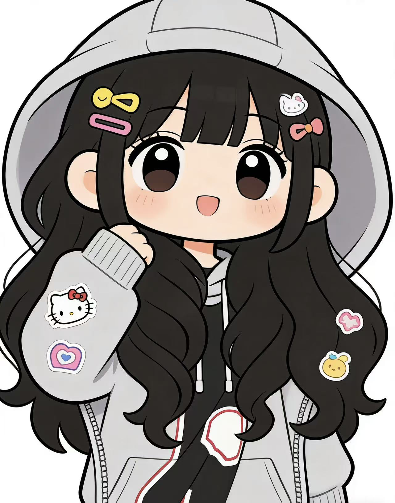

Graduate Design Portfolio · 2026
Design Portfolio as Visual Narrative
本作品集围绕“文化转译、视觉叙事、产品系统与数字交互”展开，探索设计如何把文化、自然和日常体验转化为可被理解、可被传播的视觉系统。
作品不是简单按媒介堆叠，而是按照“问题提出 — 视觉转译 — 系统构建 — 场景应用”的逻辑组织。首页用于建立整体观看路径，项目详情页进一步说明每个作品的设计问题、方法、图像含义与最终价值。
06
精选设计项目
05
设计方向覆盖
04
观看逻辑层级

Designer Portrait
Graduate Designer
Culture Translation
IP Design
Packaging Design
Product System
UI / UX Design
Information Design
Culture Translation
IP Design
Packaging Design
Product System
UI / UX Design
Information Design
Portfolio Logic
01 / Problem
设计问题
每个项目回应一个明确问题：文化如何年轻化、产品如何系统化、生态议题如何视觉化。
02 / Translation
视觉转译
从文化符号、自然现象和用户需求中提取视觉线索，转化为清晰的设计语言。
03 / System
系统构建
让单一图像扩展为角色系统、包装系统、产品系统、界面流程或信息视觉系统。
04 / Scenario
场景应用
通过周边、开盒体验、桌面场景、移动端流程和公共传播说明设计价值。